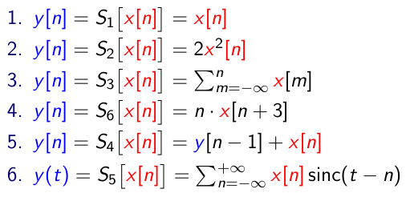
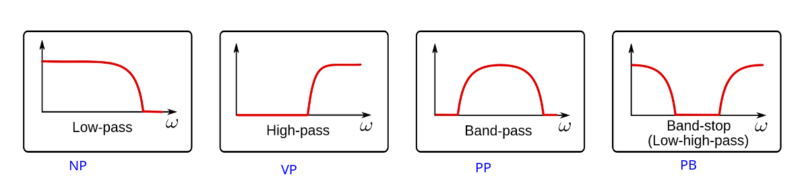
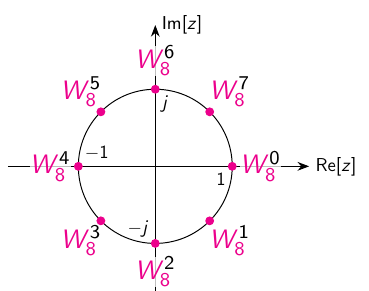

Veza između Kroneckove delta funkcije i jedinične stepenice: sumacija
od \(-\infty\) do \(n\) po \(\delta[m]\)
\(\mu[n] =
\sum\limits_{m=-\infty}^{n}\delta[m]\)
(1) Objasnite dekompoziciju signala u težinsku sumu baznih funkcija (2)
Objasnite što je spektar signala. (3) Definirajte matricu baznih
funkcija, Gramovu matricu i transforamcijsku matricu koju koristimo za
računanje spektra nekog signala konačnog trajanja.
Signal rastavljamo u njegove gradivne komponente koje se sastoje od
drugih signala (bazne funkcije \(\phi_k(t)\)) a spektar (\(s_k\)) označava doprinos pojedine bazne
funkcije.
Rastav signala na bazne funckije i njihov spektar može sadržavati
prebrojivo ili neprebrojivo mnogo baznih funckija.
\(x(t) = \sum_{k}s_k\phi_k(t)\)
Najpoznatnija metoda rastava signala je Fourierova
transformacija.
Skalarnim umnoškom možemo pronaći spektar \(s_k\) na način da primjenimo skalarni
umnožak na gornju jednadžbu nakon čega dobivamo sljedeći izraz:
Operacija \(^*\) konjugira sve
elemente matrice. Konjugirana matrica je ista matrica kao i originalna
ali svi kompleksni brojevi imaju promjenjeni predznak +-.
Operacija \(^{H}\) daje hermatski
transponiranu matricu(matrica koja je konjugirana i transponirana)
Operacija \(^{+}\) je Moore-Penrosev
psuedoinverz matrice (učili na strojnom učenju)
Definirajte diskretnu Fourierovu transformaciju u N točaka (DFTN).
Fouriervoa baza (\(DTF_N\)) je \(\phi_k[n]=\exp \left(2 \pi j \frac{n
k}{N}\right)\) i također je ortogonalna
Definirajte postupak očitavanja signala te iskažite teorem o očitavanju.
Očitavanje/uzorkovanje/otpikavanje kontinuiranog signala \(x(t) : \mathbb{R} \rightarrow \mathbb{C}\)
jest postupak uzimanja jednoliko vremenski razmaknutih uzoraka tog
signala. Jednoliki vremenski razmak između uzoraka zovemo period
očitavanja i označavamo s \(T_s\).
Signalu \(x(t)\) pridružjemo uzorke
\(y[n]\)
\[y[n] = x\left(n T_s\right)\] što
se može čitati “uzorak \(y[n]\) u
koraku n sadrži vrijednost signala \(x(t)\) u trenutku \(t=nT_s\)
Ako uz zadovoljen uvjet teorema očitavanja uzorci signala jednoznačno
opisuju signal onda to znači da mora postojati postupak rekonstrukcije
signala iz njegovih uzoraka. Taj postupak zovemo interpolacija.
Međutim, želimo vremenski kont. signal \(x(t)\) i njegove uzorke \(x[n]\) prikazati u istoj domeni. To radimo
tako da uvedemo novi kont. signal \(x_s(t) :
\mathbb{R} \rightarrow \mathbb{C}\) koji sadržava istu
informaciju kao i \(x[n]\). To je
zapravo kontinuirana verzija očitanog signala \(x[n]\). Logički gledajući situacija je
sljedeća:
Definirajte postupak rekonstrukcija signala iz uzoraka te iskažite
idealnu interpolacijsku formulu.
Ako uz zadovoljen (za sada nedefinirani) uvjet teorema očitavanja
uzorci signala jednoznačno opisuju signal onda to znači da mora
postojati postupak rekonstrukcije signala iz njegovih uzoraka. Taj
postupak zovemo interpolacija.
Za rekonstrukciju u spektralnoj domeni potrebno je
zadovoljiti Nyquistov uvjet. Za pojasno ograničene signale maksimalne
frekvencije \(\Omega_{\text{MAX}}\)
nema preklapanja spektra ako je zadovoljen uvjet
Sad se mogu dva spektra pomnožiti (spektar se definira kao integral
originalnog signala pomnožen sa \(e^{-j\Omega
t}\)) čime se dobiva izraz u kojem središnji integral sadržava
definiciju konvolucije dva signala. Jedan signal je \(x_s(t)\) a drugi je signal koji “tražimo”
je \(f(t)\). Taj signal možemo
izračunati tako da napravimo inverz (ICTFT) njegovog poznatog spektra
\(F(\Omega)\) koji je definiran gore.
Inverz ispadne \(f(t) =
\frac{\text{sin}(\frac{\pi t}{T_s})}{\frac{\pi t}{T_s}} =
\text{sinc}(t)\)
Sad znamo da spektralna filtracija postaje konvolucija u vremenskoj
domeni:
Formula nam u osnovi govori da kontinuirani signal rekonstruiramo
tako da na mjesto svakog uzorka postavimo funkciju sinc skaliranu tako
da njena amplituda bude upravo jednaka amplitudi uzorka.
Sustavi
Definirajte sustav preko ulazno/izlaznog modela.
Ulazne veličine \(x[n]\) su one koje
utječu na vladanje sustava i zovemo ih pobudom. Izlazne
veličine \(y[n]\) su one kojima sustav
utječe na vanjski svijet i zovemo ih odzivom. Oboje su
vremenske funkcije koje ovise o nezavisnoj varijabli koja mjeri
vrijeme.
Sustav prema tome možemo opisati tako da modeliramo kako ulazne
veličine utječu na izlazne veličine.
Sustav \(\mathcal{S}\) koja povezuje
ulaz \(x\) i izlaz \(y\). Kažemo da je \(y[n]\) odziv sustava \(\mathcal{S}\) na pobudu \(x[n]\)
\[ y = \mathcal{S}[x] \]
Primjeri sustava:

Definirajte linearni vremenski nepromjenjiv (LTI) sustav te objasnite
svojstva linearnosti i vremenskenepromjenjivosti.
Malo šire o svojstvima sustava:
vremenska nepromjenjivost (engl. time invariance)
linearnost (engl. linearity)
posjedovanje memorije (engl. systems with memory)
kauzalnost (engl. causality)
stabilnost (engl. stability)
realizabilnost (engl. realizability)
Vremenska nepromjenjivost
Sustav je vremenski nepromjenjiv ako za svaki ulazno-izlazni par
signala \(x[n]\) i \(y[n]\) te za svaki pomak \(m\) vrijedi da je odziv na
zakašnjelu/pomaknutu pobudu \(x[n-m]\)
jednak zakašnjelom/pomaknutom odzivu \(y[n-m]\)
U praksi smjer pomaka prema budućnosti je nemoguć jer to znači da
ovisimo o budućim uzorcima signala.
Linearnost i superpozicija
Svojstvo linearnosti sastoji se od:
svojstva aditivnosti
svojstvo homogenosti
a sustavi koji su linearni zadovoljavaju svojstvo superpozicije.
Linearno vremenski nepromjenjivi (LTI) sustavi su oni koji
zadovoljavaju svojstvo:
linearnosti
aditivan
homogen
vremenske nepromjenjivosti
Aditivnost
Promatramo dva ulazna signala \(x_1[n],
x_2[n]\). Svaki od njih ima svoj odziv \(y_1[n], y_2[n]\) koji se dobije tako da
provućemo ulazni signal kroz sustav \(\mathcal{S}\). Ako napravimo sljedeće:
zbrojimo \(x_1[n] + x_2[n] =
x[n]\)
\(x[n]\) provućemo kroz kroz sustav
\(\mathcal{S}\) i dobijemo odziv \(y[n]\)
ako je odziv \(y[n]\) jednak zbroju
pojedinih odziva \(y_1[n], y_2[n]\)
onda kažemo da je sustav aditivan (mora vrijediti za svaki
ulazno-izlazni par signala)
Prije svega, želimo predstaviti sustav \(\mathcal{S}\) sa funkcijom \(f\) koja definira kako se računa jedan
izlazni uzorak \(y[n]\) u koraku \(n\) a općenito ta funckija može ovisti o
više ulaznih uzoraka (\(x[-\infty], ...
,x[n],...x[+\infty]\)), dakle:
Međutim želimo ograničiti broj uzoraka koji je potreban za računanje
odziva na neku konačnu vrijednost (računala…)
Dva svojstva koja ograničavaju broj uzoraka su:
(ne)posjedovanje memorije
bezmemorijski sustavi
memorijski sustavi
kauzalnost
Bezmemorijski sustav
Sustav je bezmemorijski ako računamo odziv sustava u koraku \(n\) (\(y[n]\)) i za računanje odziva moramo znati
samo vrijednost \(x[n]\).
\[ y[n] = \mathcal{S}[x[n]] = f(x[n])
\]
Memorijski sustav
Sustav je memorijski ako za računanje odziva sustava u koraku \(n\) (\(y[n]\)) trebamo znati ulazni signal koji se
NIJE dogodio u trenutku \(n\) već u
nekom drugom trenutku \(m\). Dakle
\(m \ne n\).Red sustava je konačan broj
ulaznih uzoraka \(m\) o kojem ovisi
pobuda \(n\).
\[ y[n] = S[x[n]] = f(...,x[m],...)
\]
Primjer memorijskog sustava prvog reda. Ovaj sustav ovisi o samo
jednom dodatnom uzorku osim \(x[n]\) a
to je \(x[n-1]\):
\[ y[n] = x^2[n] + x^2[n-1] \]
Kauzalnsot
Kauzalnost u općem smislu jest veza koja opisuje kako neki događaj
kojeg zovemo uzrok utječe na neki drugi događaj kojeg zovemo
posljedica.
U obradbi signala kauzalnost sustava znači da
odziv sustava ne smije ovisiti o pobudi sustava koja se još nije
dogodila.
Odziv \(y[n]\) u koraku \(n\) smije ovisiti samo o pobudama \(x[m]\) za koje vrijedi \(m \le n\):
\[ y[n] = f_n(x[-\infty],..., x[n-1],
x[n])\]
Formalno (Sustav je kauzalan ako ne postoji budući korak \(m > n\) takav da je izlaz sustava \(y[n]\) ovisan o budućoj ulaznoj vrijednosti
\(x[m]\) u tom budućem koraku \(m\)):
Nekauzalan sustav je sustav koji nije kauzalan. Dakle, sustav čija
pobuda \(y[n]\) može ovisiti o ulazima
\(x[m]\) za koje vrijedi \(m > n\) (trenutak ulaznih signala se
dogodio nakon trenutka pobuda).
Definirajte impulsni odziv sustava i objasnite važnost konvolucije u
modeliranju LTI sustava.
Impulsni odziv sustava je skup odziva koji su pomaknuti sa jediničnim
impulsom \(\delta[n-k]\) a označavamo
ih sa \(h_k[n] =
\mathcal{S}[\delta[n-k]]\)
Skup svih \(h_k[x]\) u potpunosti
određuje sustav \(\mathcal{S}\).
Bitno je napomenuti da je \(\delta[n]\) svojstvena funckija a linearni
sustav koji koristi svojstvenu funkciju ne mijenja ulazni signal \(x[n]\) osim što ga eventualno amplitudno
skalira.
ako su svi signali kauzalni rasta ne većeg od eksponencijalnog onda
\(R_{\{y,x,h\}} \rightarrow +\infty\)
pa je područje konvergencije (RoC) uvijek neprazan oblika $ r < |z|
$.
Kako Z transformacija konvoluciju pretvara u množak imamo:
gdje je \(H(z)\) prijenosna funkcija
sustava. Diskretna eksponencijala \(z^n\) jest svojstvena funckija LIT sustava
i konvolucijske sume a \(H(z)\) je pripadna
svojestvena vrijednost:
DTFT transformacija impulznog odziva \(h[n]\) daje \(H(e^{jw})\) što i dalje u potpunosti
određuje LTI sustav pa vrijedi da je frekvencijska
karakteristika sustava jednaka:
ako je LTI sustav stabilan onda područje konvergencije prijenosne
funckije \(H(z)\) sadrži jediničnu
kružnicu \(z=e^{jw}\)
LTI stabilnost konkretno
Područje konvergencije stabilnog LTI sustava mora sadržavati
jediničnu kružnicu pa je \(r_{\text{max}} =
\max\limits_{k}|p_k| < 1\)
Vremenski diskretan LTI sustav opisan linearnom diferencijskom
jednadžbom sa stalnim koeficijentima je stabilan ako se svi
polovi njegove prijenosne funkcije nalaze unutar jedinične
kružnice.
Filtracija
Objasnite što je filtracija signala.
Filtracija je postupak u kojem se dizajniraju sustavi koji propuštaju
i/ili prigušavaju odredene frekvencije signala. To je postupak
uklanjanja neželjenih značajki ili komponenta signala. Najčešće to znači
uklanjanje nekih frekvencija ili frekvencijskih pojaseva.
Dizajniranje filtra znači odrediti koeficijente prijenosne funkcije
digitalnog filtra koje zadovoljavaju zadanu filtarsku specifikaciju. Tu
zadaću pronalaženja filtarskih koeficijenata nazivamo računalnom
podržani dizajn filtara. Glavni problem kod dizajniranja filtra jest
određivanje koeficijenata prijenosne funkcije:
Zbog toga što je postupak izračuna odziva rekurzivan onda IIR
nazivamo rekurzivnim sustavima.
FIR sustavi
za FIR vrijedi da su svi koef. \(a_m =
0\), dakle preostaje samo:
\[ y(n) = \sum\limits_{m=0}^M b_m x(n-m)
\]
\(h(m) = b_m\) za \(m=0,...M\) a inače je \(0\) zbog čega su FIR nerekurzivni
sustavi.
All-pole sustavi
Sustavi su ujedno i IIR sustavi (beskonačno trajanje impulsnog
odziva) koji se sastoje od:
\(N\) polova koji su određeni
koeficijentima \(a_m\)
\(N\) trivijalnih nula (\(z = 0\))
Svi \(b_m\) su \(0\) osim prvog.
\[
H(z)=\frac{b_0}{1+\sum_{m=1}^N a_m z^{-m}}
\]
All-zero sustavi
Sustavi su ujedno i FIR sustavi (konačno trajanje impulsnog odziva)
koji se sastoje od:
\(N\) nula koje su određene
koeficijentima \(b_m\)
\(N\) trivijalnih polova (\(z = 0\))
Svi \(a_m\) su \(0\) osim prvog.
\[
H(z)=\frac{\sum_{m=0}^M b_m z^{-m}}{1}
\]
Utjecaj položaja polova i nula na frekvencijsku karakteristiku
nula ili pol ima najveći utjecaj na područje frekvencijske
karakteristike koja odgovara dijelu jedinične kružnice koji je najbliži
promatranoj nuli ili polu
približavanjem nule ili pola jediničnoj kružnici raste njihov
utjecaj na frekvencijsku karakteristiku
za pol čiji je modul \(|p_m|\)blizak jedinici,
amplitudna frekvencijska karakteristika ima lokalni maksimum za
frekvenciju koja odgovara točki na jediničnoj kružnici koja je najbliža
promatranom polu
za nulu čiji je modul \(|z_m|\) blizak jedinici, amplitudna
frekvencijska karakteristika ima lokalni minimum za frekvenciju koja
odgovara točki na jediničnoj kružnici koja je najbliža promatranoj
nuli
ako je neka od nula na jediničnoj kružnici\(z_m = e^{j\omega}\) za kružnu frekvenciju
\(\omega = \omega m\) amplitudna
frekvencijska karakteristika ima vrijednost nula, a faza skok od π
radijana
ako je neki od polova na jediničnoj kružnici, \(p_m = e^{j\omega_m}\) za kružnu frekvenciju
\(\omega = \omega_m\) amplitudna
frekvencijska karakteristika ima beskonačnu vrijednost
polovi i nule koje se nalaze u ishodištu (trivijalni) ne
utječu na amplitudnu frekvencijsku karakteristiku nego samo na
faznu
Definirajte fazno i grupno kašnjenje te objasnite zašto je pri
filtraciji važna linearna fazna karakteristika.
fun fact: Prematanje faze za bilo koji višekratnik od \(2 \pi\) ne mijenja odziv sustava.
Fazno kašnjenje je negativni omjer fazne karakteristike i kružne
frekvencije:
Kod filtriranja često želimo mijenjati samo amplitudu pojedinih
komponenti signala bez mijenjanja njihove faze. Taj zahtjev da filtar
utječe samo na amplitudu postavlja ogrnaičenja na željenu
fazno-frekvencijsku karakteristiku. Preciznije, željena fazna
karakteristika \(\angle \phi(\omega)\)
mora biti afina funkcija od \(\omega\)
(pravac), dakle mora vrijediti
\[\angle \phi(\omega)=-a\cdot\omega, \quad
a \in \mathbb{R}\]
Pošto je fazno kašnjenje konstata, to znači da sve komponente
složenog signala kasne podjednako i zbog toga takva konstantna faza ne
unosi fazna izobličenja.
Sustav koji ima različita kašnjenja za komponente složenog signala
uzrokuje fazno izobličenje signala.
Razramtramo spektar \(X(e^{j\omega})\) koji se rastavlja na
amplitudni i fazni dio:
Fazno-frekvencijska karakteristika \(\angle
X(e^{j\omega})\) je zapravo dio koji utječe na oblik faze.
Kod filtriranja često želimo mijenjati samo amplitudu pojedinih
komponenti signala bez mijenjanja njihove faze. Taj zahtjev da filtar
utječe samo na amplitudu postavlja ograničenje na željenu
fazno-frekvencijsku karakteristiku. Preciznije, željena fazna
karakteristika \(\angle X(\omega)\)
mora biti afina funkcija od \(\omega\)
(pravac), dakle mora vrijediti
\[\angle X(\omega)=a+b\omega\]
gdje su \(a\) i \(b\) realni brojevi. Ako je taj uvjet
zadovoljen, kažemo da je faza linearna.
LTI sustave ili filtre čija fazna karakteristika je opisana gore
navedenom jednadžbom nazivamo sustavima s generaliziranom
linearnom fazom. Glavna prednost takvih filtara je da ne unose
fazna izobličenja, no moguće je da uzrokuje grupno
kašnjenje.
Možemo pokazati da se taj uvjet generalizirane linearne
faze koji je iskazan u frekvencijskoj domeni transformira u
uvjet simetričnost ili
antisimetričnosti impulsnog odziva u vremenskoj domeni.
Prema tome impulsni odziv svakog filtra generalizirane linearne faze
mora imati točku oko koje je ili simetričan ili antisimetričan.
Idealno grupno vrijeme kašnjenje za filtre savršeno linearne faze je
konstantno. Za dizajnirani IIR filtar stoga želimo da grupno vrijeme
kašnjenje u području propuštanja bude što bliže konstanti. Grupno
kašnjenje u području gušenja nas ne zanima jer se te frekvencije
uklanjaju iz signala.
Primijetite sljedeće:
Sustavi s linearnom fazom imaju konstantno i grupno i fazno
kašnjenje.
Grupno kašnjenje možemo koristiti kao približnu mjeru faznih
izobličenja; značajna promjenljivost grupnog kašnjenja znači da su fazna
izobličenja moguća
grupno i fazno kašnjenje poprimaju NEcjeloborne vrijednosti što
otežava njihovu primjenu i interpretaciju u praksi
Definirajte amplitudno selektivnu filtraciju i objasnite osnovne
amplitudno selektivne filtre (NP, VP, PP i PB).
Svepropusni filtar
Onaj koji ne utječe na amplitudno frekvencijsku karakteristiku već
samo na faznu. Zbog toga se nazivaju i korektori faze. Ovaj sustav ima
recipročne polove (unutar jedinične kružnice) i nule (izvan jedinične
kružnice).
Dizajniranje
amplitudno-selektivnih IIR filtara
Kod klasičnog dizajna filtara (i digitalnih i analognih) postupak
dizajniranja se razdvaja u dva koraka:
dizajniranje amplitudno-selektivnog filtra
dizajniranje faznog korektora.
Takvo razdvajanje dizajna u dva odvojena koraka se temelji na
činjenici da svaku prijenosnu funkciju stabilnog i kauzalnog filtra
možemo jednoznačno rastaviti na kaskadu (produkt prijenosnih funkcija)
minimalno-faznog filtra (engl. minimum-phase
filter) i svepropusnog filtra (engl. all-pass
filter), odnosno
\[H(z)=H_{MP}(z)H_{A}(z).\]
Minimalno-fazni filtar \(H_{MP}(z)\)
je određen time da su svi njegovi polovi i sve njegove nule unutar
jedinične kružnice. Osim toga, amplituda i faza prijenosne funkcije
\(H_{MP}(e^{j\omega})\) su povezani Hilbertovom
transformacijom, odnosno ako je zadana amplitudna karakteristika
\(|H_{MP}(e^{j\omega})|\) onda iz nje
možemo jednoznačno odrediti faznu karakteristiku \(\angle H_{MP}(e^{j\omega})\), i
obrnuto.
Svepropusni filtar \(H_{A}(z)\) je
određen time da ne utječe na amplitudni spektar signala, odnosno za
njega vrijedi \(|H_{A}(e^{j\omega})|=1\), dok fazna
karakteristika ovisi isključivo o položajima nula izvan jedinične
kružnice. Prema tome svepropusni filtar utječe samo na fazu signala. On
ima recipročne polove (unutar jedinične kružnice) i nule (izvan
jedinične kružnice) (omjer mora biti 1 da ne mijenja amplitudu).
Ova mogućnost rastava prijenosne funkcije znači da bilo koji IIR
filtar možemo prikazati preko minimalno-faznog dijela koji u potpunosti
određuje amplitudnu karakteristiku filtra, te preko svepropusnog dijela
koji dodatno određuje faznu karakteristiku.
Četiri tipa amplitudno-selektivih filtara obzirom na oblik željene
amplitudne karakteristike:
nisko-propusni ili NP filtar,
visoko-propusni ili VP filtar,
pojasno-propusni ili PP filtar, i
pojasnu branu (PB).
Odgovarajuće kratice u engleskom jeziku su LP za nisko-propusni
filtar, od engl. low-pass, HP za visoko-propusni filtar, od
engl. high-pass, BP za pojasno-propusni filtar, od engl.
band-pass, i BS za pojasnu branu, od engl.
band-stop.
Nisko-propusni filtar propušta frekvencije manje od
granične frekvencije \(\omega_c\).
Frekvencije od \(0\) d \(\omega_c\) su propuštene zbog čega se
raspon frekvencija \([0,\omega_c\rangle\) naziva
područjem propuštanja. Frekvencije of \(\omega_c\) do \(\pi\) su ugušene (zaustavljene) zbog čega
se to frekvencijsko područje \(\langle
\omega_c,\pi\rangle\) naziva područjem gušenja.
Ostvarivi (realizabilni) filtri ne mogu imati beskonačno strm prijelaz
iz područja propuštanja u područje gušenja pa zbog toga uvijek postoji
neko prijelazno područje oko granične frekvencije \(\omega_c\).
Visoko-propusni filtar guši frekvencije manje od
granične frekvencije \(\omega_c\). U
odnosu na nisko-propusni filtar iste granične frekvencije kod
visoko-propusnog filtra područje propuštanja i područje gušenja su
zamijenjeni.
Pojasno-propusni filtar propušta samo frekvencije
unutar odabranog frekvencijskog pojasa \(\langle\omega_L,\omega_H\rangle\).
Pojasni brana gušiti sve frekvencije unutar
odabranog frekvencijskog pojasa \(\langle\omega_L,\omega_H\rangle\). Pojasne
brane s uskim područjem gušenja zovemo zapornim
filtrima (engl. notch filter); digitalni zaporni filtri
najčešće imaju jednu ili više nula na jediničnoj kružnici točno unutar
njihovog uskog pojasa gušenja.

Ostali tipove filtara koji ne odgovaraju nekom od standardna četiri
tipa amplitudno-selektivnih filtara možemo dizajnirati klasičnim
postupkom samo ako se njihova amplitudna karakteristika može iskazati
kao kombinacija standardnih NP, VP, PP i PB filtara, bilo kao njihov
paralelni spoj (zbroj prijenosnih funkcija) bilo kao njihov kaskadni
spoj (produkt prijenosnih funkcija).
Definirajte FIR filtre te objasnite kako pomoću njih ostvarujemo
filtraciju bez faznih izobličenja.
FIR smo već definirali gore.
tldr; tako da impulsni odziv tih filtara zadovoljava svojstvo
simetrije ili antisimetrije. To znači da su prvi i zadnji koeficijent
jednaki, drugi i predzadnji jednaki, itd.
Položaj nula
Svaki digitalni filtar u potpunosti je opisan položajem vlastitih
polova i nula. FIR filtri nemaju ne-trivijalnih polova što znači da samo
nule utječu na njihovu frekvencijsku karakteristiku. Prema tome kod FIR
filtara nas zanima isključivo položaj vlastitih nula.
Znamo da ako je impulsni odziv realan onda su nule digitalnog filtra
ili čisto realne ili su sparene u konjugirano-kompleksne parove.
Također, nula filtra postavljena na jediničnu kružnicu \(z=e^{j\omega}\) na frekvenciju \(\omega_0\) uzrokuje da amplitudna
karakteristika na \(\omega_0\) postane
jednaka nuli. U tom slučaju kažemo da filtar u potpunosti
zatire odabranu frekvenciju.
Položaj
nula kod FIR filtara generalizirane linearne faze
Kod određivanja položaja nula od posebnog interesa su FIR
filtri generalizirane linearne faze. Impulsni odziv tih filtara
zadovoljava svojstvo simetrije ili antisimetrije.
\[h[n]=\pm h[M-n].\]
To znači da su prvi i zadnji koeficijent jednaki, drugi i predzadnji
jednaki, itd… Gore navedeno svojstvo impulsnog odziva omogućava nam da
prijenosnu funkcija filtra izrazimo na dva različita načina,
Polinome \(H(z)\) s realnim
koeficijentima koji zadovoljavu gore navedene uvjete obično zovemo
polinomima sa zrcalnim koeficijentima. U engleskoj literaturi se još
preciznije koriste izrazi mirror-image polynomial i
antimirror-image polynomial.
Za takav polinom vrijedi da ako je \(z_0\) njegova nula onda je i \(1/z_0\) također njegova nula.
To svojstvo proizlazi odmah iz \(H(z)=\pm
z^{-M}H(z^{-1})\) jer za \(z_0\neq
0\) imamo \(H(z_0)=0=z_0^{-M}H(z_0^{-1})\) što vrijedi
samo ako je \(H(z_0^{-1})=0\).
Navedeno ograničenje položaja nula FIR filtra linearne faze
je očekivano obzirom na to da simetrija ili antisimetrija pripadajućeg
impulsnog odziva smanjuje broj stupnjeve slobode u optimizacijskom
problemu na pola. Prema tome kada bi dizajnirali takve filtre
korištenjem reprezentacije preko nula, polova i pojačanja onda je samo
dio nula slobodno raspoređen i podložan optimizaciji, a preostale nule
su unaprijed ograničene uvjetima koji ih sparuju u
konjugirano-kompleksne i u recipročne parove.
Definirajte IIR filtre te objasnite njihove prednosti i nedostatke u
odnosu na FIR filtre.
FIR prednosti:
bezuvjetna stabilnost;
precizna kontrola fazne karaketeristike (linearnost faze);
optimalni algoritmi za dizajniranje
robusniji što se tiče numeričke preciznosti (nazivnik je 1)
FIR Mane:
dulje input-output kašnjenje;
skuplje za računski izračunati
IIR prenosti:
brže se računaju
kraće input-output kašnjenje
kompaktna reprezentacija
IIR Mane:
stabilnost nije garantirana (nazivnik može biti ne-jedan, tj. polovi
nisu trivijalni)
fazni oddziv nije lako kontrolirati
osjetljiv na numeričke preciznosti
TODO: Primjene
Definirajte brzu Fourierovu transformaciju (FFT) i navedite njenu
asimptotsku složenost.
Ponavljanje
Bazna funckije \(\text{DTF}_N\) su
\(\phi_k[n] = exp(2\pi j \frac{n k}{N}), k =
0, ..., N-1\)
a \(\textcolor{red}{N}\) označava
broj jednako raspodjeljenih kompleksnih brojeva na jediničnoj
kružnici.

Broj operacija za izrarvno računanje \(\text{DTF}_N\) jest: - \(4N^2\) množenje realnih brojeva - \(4N^2 - 2N\) zbrajanja realnih brojeva
dakle složenost je \(O(N^2)\)
Problem složenosti napadamo sa principom podjeli-pa-vladaj. Neka je
\(N\) složen broj oblika \(r^m\). Tad princip zovemo korijen-r metoda.
Konkretno mi uvijek koristimo \(r=2\)
što je onda korijen-2 metoda (engl. radix-2)
Sad svaki indeks rastavljamo na dva načina: 1. decimacija u vremenu
,\(n\) prestavljamo u obliku \(n = 2n_1 + n_0\) 2. decimacija u
frekvenciji, \(k\) prestavljamo u
obliku \(k=2 k_1 + k_0\)
Razlažemo signal \(x[n]\) na parne i
neparne indeksirane uzorke:
Interpretacija člana \(W^k_n\) je ta
da množimo nešto sa kompleksnim brojem što u ovom slučaju rotira
podgrupu i tako se prebacujemo na neparne indeksirani spektar.
Analiza složenosti
Složenost spajanja dvije \(DFT_{N/2}\) u jednu \(DFT_N\) je: - \(N\) množenja kompleksnih brojeva - \(N\) zbrajanja kompleksnih brojeva
Dakle za rastavljanje imamo \(O(m
N)\) ako je \(m\) broj razina
rastava. Vrijedi \(N=2^m\) pa je \(m = log_2 N\)
Konačna složenost potpunog rastava za korijen-2 decimaciju je \(O(N log_2 N)\)
Objasnite razliku između linearne i cirkularne konvolucije te objasnite
kako koristimo FFT za efikasno računanje linearne konvolucije konačnih
signala.
Objasnite razliku između linearne i cirkularne korelacije te objasnite
kako koristimo FFT za efikasno računanje linearne korelacije konačnih
signala.
Teorem o konvoluciji kaže da se konvolucija u vremenskoj domeni
preslikava u običan umnožak u frekvencijskoj domeni.
Za velike N možemo koristit FFT da izračunamo cirkularnu konvoluciju
tako da prvo napravimo Fourierovu transformaciju nad oba signala. Sad
imamo 2 spektra. Pomnožimo ih, a zatim ih vratimo u signal sa inverzom
Foruierove transformacije. Složenost te operacije je \(O(N log_2 N)\)
Dakle korelaciju možemo izračunati pomoću DTFT-a na sljedeći način: -
primjeni DTFT na oba signala - sad imamo dva spektra - primjeni
konjugaciju za drugi spektar - pomnoži dva spektra - koristi IDTFT da se
vratiš u vremensku domenu
Složenost za efikasno računanje korelacije uz FFT je \(O(N log_2 N)\) uz veću skrivenu
konstantu.
Signal korelacije postoji i lijevo i desno od toček \(n=0\) dok standardne implementacije FFT-a
očekuju desne signale koji počinju od \(n=0\) pa zato: - računamo li \(r_{xy}[n]\) koraku \(n\) dodajemo \(-
N_y +1\) - računamo li \(r_{yx}[n]\) koraku \(n\) dodajemo \(-
N_x +1\)
Navedite nekoliko problema aritmetike konačne preciznosti te detaljno
objasnite kako možemo otkloniti problem preljeva.
Realizacija filtra mora biti numerički stabila pa ćemo definirati
česte numeričke probleme poput preljev, podljev i greška
zaokruživanja
Svaki program koji izravno računa sljedeći izraz kažemo da odgovara
direktnoj realizaciji
Kažemo da se na početku filtracije javlja prijelazna pojava jer
početne vrijednosti \(x[n]\) i \(y[n]\) nisu poznate. Ona je određena
brzinom prigušenja impulsnog odziva. Generalno se postavljaju u nulu jer
se time osiguravamo linearnost.
Možemo smanjtii broj međurezutlata tako da spojimo ulaz \(x[n]\) i izlaz \(y[n]\) u programu.
… TODO …
Konačna preciznost određena je broj značajnih znamenki koje
pohranjujemo i položaj decimalne točke. Kod prelaska u konačnu
preciznost uvijek se javljaju greške zaokruživanja. Te operacije onda
označavamo sa zaokruživanjem simbola.
Rezultat približnih operacija u konačnoj preciznosti koje unose
grešku mora biti jednak zaokruživanju rezultata kojeg
bi dobili korištenjem artimetike beskonačne preciznosti na najbliži broj
kojeg možemo zapisati.
Ako je najveći broj kojeg možemo zapisati 9.9 a najmanji -9.9, a
najmanji pozitivan 0.1
onda 6.2 + 5.3 = 9.9 (nije 11.5) jer se dogodio
preljev.
Također ovisi o vrsti artimetike: - aritmetika zasićenjem: 9.9 (stane
na max broju) - modulna artimetika: -8.4 (dolazi do prematanja)
Pri množenju 6.2 * 0.2 = 1.24 ali zapravo dobivamo 1.2 i tu se
dogodila greška zaokruživanja.
Također 0.2 * 0.2 = 0.04 ali zapravo dobivamo 0 i to je greška
podljeva.
Prelijev se događa u čvoru grafa toka signala čija apsolutna
vrijednost preskoči dinamku \(D\)
Ako postavimo ograničenje amplitude (ili dinamike) ulaza
\[ |x[n]| \le D_x \lt D \]
onda za svaki čvor kroz analizu najgoreg slučaja možemo odrediti
kolika može biti najveća vrijednost u tom čvoru.
Ako znamo sve dinamike čvorova \(D_v\) onda možemo uvesti pojačanje \(k_ul\) i \(k_izl\) takva da vrijedi:
Dinamiku određujemo u tri koraka: 1. određujemo prijenosnu funkciju
Hv (z) između ulaza i čvora - označimo sve čvorove i iz njih postavljamo
jednadžbe. Na kraju svedemo sve na izraz: \[
Č_v(z) = H_v(z)X(z)\] gdje je \(Č_v(z)\) izraz za čvor koji tražimo a \(H_v(z)\) je prijenosna funkcija između
ulaza i čvora \(v\)
iz \(H_v (z)\) računamo impulsni
odziv \(h_v [n]\)
računamo \(\sum_{n \in \mathbb{Z}}h_v
[n]\).
određujemo dinamiku kao $ D_v = D_x _{m }|h_v[m]|$